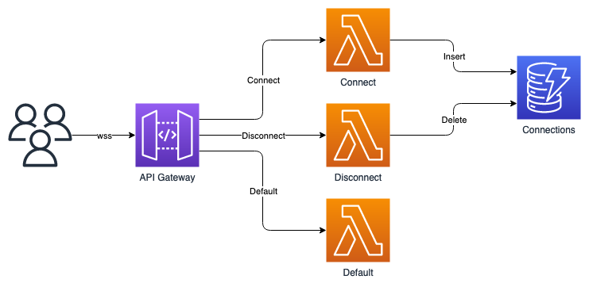
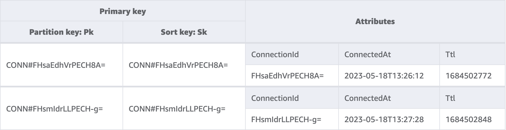

Creating a simple websocket API on AWS with C#
2023-05-31TL;DR deploy instructions here
Goals
When creating and deploying serverless websocket APIs on AWS in the past, there have been a series of pain points that I have been collecting solutions for.
I've created a GitHub template repository to try to make setting up a new websocket API on AWS as easy as possible. This article serves as a companion to the repo to explain why I've done the things I've done.
The CloudFormation template included with the C# solution allows the API to be deployed to AWS very quickly, without manual setup from developers. The template serves as a starting point, and can be modified to fit the developer's needs.
Prerequisites
My implementation uses C# as the programming language for the Lambda functions, though it shouldn't be too difficult to swap out the code for another supported language*; only the code and the template entries for the lambda functions will need changed.
*note that at the time of writing, .Net 5 and 7 are listed as supported runtimes, but neither seem to be valid.
Technologies used
- CloudFormation
- API Gateway
- Lambda
- DynamoDB
- C#
Requirements for deploying
Architecture

- User connects to API Gateway via websockets (wss)
- API Gateway invokes a lambda to store the user's unique connection id to DynamoDB
- When the user sends a message through the wss connection, a lambda is invoked to handle the message
- When the user disconnects, a lambda runs to remove the user from DynamoDB
Using the template
Either clone the repository, or use the repository as a template with the little green “Use this template“ button on Github or by clicking here.
To clone the repository
# clone the repo
git clone https://github.com/jamsidedown/AwsWebsocketDotnetTemplate.git
# change into the repo directory
cd AwsWebsocketDotnetTemplate
To build the code*
*Ensure you’ve installed Dotnet SDK
# change into the src directory
cd src
# restore dependencies and build the source
dotnet restore
dotnet build
# run unit tests on the code
dotnet test
To deploy to AWS
*First, ensure you have installed the AWS CLI and the AWS SAM CLI
*Second, ensure you’ve configured the AWS CLI to be connected to your AWS account
The process is a little different the first time you deploy the stack
# if you're in the src directory then move up to the parent directory
cd ..
# first run a build to compile and package the code
sam build
# then deploy to AWS
# the stack name can be replaced with whatever you choose
sam deploy --stack-name MyWebsocketApi --capabilities CAPABILITY_NAMED_IAM --guided
# leave all guided values as default
After the first deploy, the process is significantly simpler
sam build && sam deploy
After deploying, the url of the websocket API will be output in your terminal, wscat is a great tool for connecting to websocket APIs.
CloudFormation outputs from deployed stack
--------------------------------------------------------------------------------------------------------------------------
Outputs
--------------------------------------------------------------------------------------------------------------------------
Key ApiUrl
Description Api Gateway endpoint URL
Value wss://abcdefghij.execute-api.eu-west-2.amazonaws.com/Prod
--------------------------------------------------------------------------------------------------------------------------
Successfully created/updated stack - MyWebsocketApi in eu-west-2
$ wscat -c wss://abcdefghij.execute-api.eu-west-2.amazonaws.com/Prod
Connected (press CTRL+C to quit)
> Hello
< Hello
Why serverless
In my case, serverless is convenient for development because the majority of the time my API is sitting getting zero requests. As a developer writing personal projects I want to avoid incurring a bill for my dev work, but be able to scale up to meet any demand I can reasonably expect to get from a published service.
I worked with serverless and websockets in past jobs, so I'm more comfortable with CloudFormation templates than building and publishing containers. I like that I can deploy a NoSQL database as easily as I can with DynamoDB, and adding a queue later down the line for message handling can be added with just a few lines in my template.
Serverless isn't for everyone, or for every occasion, but it works for me in this case.
API gateway
API Gateway is the AWS service to use if you want to host a serverless API.
ApiGateway:
Type: "AWS::ApiGatewayV2::Api"
Properties:
Name: !Sub "${AWS::StackName}-wss-api"
ProtocolType: "WEBSOCKET"
RouteSelectionExpression: "\\$default"
The API gateway I've defined in the CloudFormation template is set up as a Websocket API, with routes defined for connecting, disconnecting, and a default route to handle all messages received from the client.
Here, the RouteSelectionExpression has been set to \\$default, which means that all messages sent to the API after a client has connected will be handled by the lambda attached to the default route.
It’s more common (at least in projects I’ve worked on) to specify the action as part of the message being sent to the API, in which case the RouteSelectionExpression can be set to $request.body.action*. This enables messages with the format
{
"action": "broadcast",
"body": {"message": "Hello, world!"}
}
API Gateway will read the action from the message sent by the client and forward the message to the lambda attached to the broadcast route (if it exists).
*The documentation for the
RouteSelectionExpressionsays that this is more customisable than I initially thought, and that any property in the json message can be used for routing.
Logging
I’ve left API Gateway logging out of the template, as it stores a lot of data to CloudWatch. If required, I’ve generally enabled it manually through the AWS console, tested whatever I needed to test, then disabled it again once I was finished.
Stage
Stage:
Type: "AWS::ApiGatewayV2::Stage"
Properties:
StageName: "Prod"
AutoDeploy: true
ApiId: !Ref "ApiGateway"
DefaultRouteSettings:
ThrottlingRateLimit: 100
ThrottlingBurstLimit: 50
There's a Prod stage that auto deploys every time it needs to, with some configured throttling to avoid accidentally hammering any of the lambdas in an infinite loop if I forget to add an exit condition (which happened to a front-end dev at a company I used to work at).
API Gateway has a number of default rate-limiting restrictions, but I’ve set low values here both to ensure I don’t incur unexpected costs, as well as showing how to customise these values.
My understanding is that each request takes a token from a bucket, once the bucket has ran out of tokens, each new request will recieve an error until there are new tokens available. The rate limit is the number of new tokens that get added to the bucket every second, and the burst limit is the number of reserve tokens the bucket can hold.
Routes and integrations
Any lambda that will be invoked by API Gateway will need to be hooked up using a route and an integration. I’ve described this in more detail in the Lambda section below.
Limitations
- Websocket APIs can only accept 500 new connections per second, this value can be adjusted through AWS support, but I’ve not found anything online regarding the maximum requests per second available
- There is a default maximum rate limit of 10,000 requests per second with a burst bucket size of 5,000 on a per AWS account basis. This value can also be raised through AWS support, but I’m not sure how far
- API Gateway websocket sessions have a maximum lifetime of 2 hours, this cannot be adjusted
- With the default connection rate limit, this effectively limits the maximum number of connections to 3,600,000
- Websocket sessions have an idle timeout of 10 minutes, so clients will need to be configured to reconnect if the connection drops
- Messages have a maximum size of 128KB, with a maximum frame size of 32KB (messages larger than 32KB will be split)
- Send lots of little messages, rather than few massive ones
- Each API is limited to 300 routes, though this can be increased via AWS support
- Last time I checked API Gateway didn’t support path parameters with websocket APIs
- I’ve used a workaround using CloudFront before
- If this is still an issue I’ll write another article describing how to get around this
Lambda
Lambda is AWS' service for running code on-demand. Each lambda tends to be one function, with only the dependencies and permissions it needs to do its job.
I’ve setup lambdas for the connect, disconnect, and default routes in API Gateway; each handling one small piece of functionality.
The connect lambda handles new connections to the websocket API, storing the unique connection id to DynamoDB, along with the time the user connected, any additional data to be stored about the user (username etc.), an expiry on the entry in case it isn’t cleaned up properly on disconnect.
The disconnect lambda handles clients disconnecting, removing their entry from DynamoDB. If this were a pub/sub service, the disconnect service could also remove any subscriptions associated with the connection.
The default lambda handles all messages sent from a connected client. This isn’t necessarily how I’d recommend using websockets with API Gateway, but it made for a simple starting point to build on top of.
I’ve included just the connect lambda here, as both the disconnect and default lambdas are defined in a very similar manner.
ConnectFunction:
Type: "AWS::Serverless::Function"
Properties:
Handler: !Sub "${ProjectNamespace}::${ProjectNamespace}.Functions.Connect::Handler"
Role: !GetAtt "LambdaRole.Arn"
There are some sensible(?) defaults defined for lambda functions, including the runtime, memory allocation, timeout, platform architecture, and environment variables that all lambdas have access to.
Globals:
Function:
Runtime: "dotnet6"
Timeout: 10
Architectures:
- "arm64"
MemorySize: 512
CodeUri: !Sub "./src/${ProjectNamespace}/"
Environment:
Variables:
CONNECTIONS_TABLE: !Ref "ConnectionsTable"
CONNECTIONS_ENDPOINT: !Sub "https://${ApiGateway}.execute-api.${AWS::Region}.amazonaws.com/${Stage}"
Cold starts
One of the common critiques around Lambda is that the first run of a function after it hasn’t been called in a while the time taken to spin up an instance of the lambda means the client will be sat waiting. This is referred to as a cold start, and can be a real pain in time-critical applications.
The CPU provisioned to each lambda scales with the memory given to the lambda to run. At 1536MB of RAM lambdas will get one full vCPU core.
For more critical applications, lambdas can be changed to use provisioned concurrency, or lambda warmers can be used to ensure a set number of lambdas stay awake at all time.
From my (brief) testing, if a faster cold start is crucial then allocating more memory is recommended. If the function is mostly going to be warm, the runtime mainly depends on how quickly other services called by the lambda are.
| Memory (MB) | Cold start (ms) | Warm invocation |
|---|---|---|
| 512 | 1813 | 15 |
| 1024 | 860 | 11 |
| 1536 | 636 | 10 |
Log group
The lambda’s log group will automatically be created if not defined in the template, but I’ve had issues where log groups weren’t cleaned up when the CloudFormation stack was deleted in the past. I’ve not had that issue with log groups included in the template.
ConnectFunctionLogGroup:
Type: "AWS::Logs::LogGroup"
Properties:
LogGroupName: !Sub "/aws/lambda/${ConnectFunction}"
RetentionInDays: 30
I’ve added a retention period to each log group by default, this can be easily removed if logs need to persist indefinitely. I added the retention period to avoid incurring costs for stale CloudWatch logs taking up space over time.
Route and integration
The route and integration are how API Gateway map each of it’s routes through to a lambda function. I’ve been copying and pasting these into every websocket project I’ve worked on for a while so the meanings are somewhat lost to me; if it ain’t broke don’t fix it.
ConnectRoute:
Type: "AWS::ApiGatewayV2::Route"
Properties:
ApiId: !Ref "ApiGateway"
RouteKey: "$connect"
OperationName: "ConnectRoute"
Target: !Sub "integrations/${ConnectIntegration}"
ConnectIntegration:
Type: "AWS::ApiGatewayV2::Integration"
Properties:
ApiId: !Ref "ApiGateway"
IntegrationType: "AWS_PROXY"
IntegrationUri: !Sub "arn:aws:apigateway:${AWS::Region}:lambda:path/2015-03-31/functions/${ConnectFunction.Arn}/invocations"
Invoke permission
These permissions are defined on a per-lambda basis; they allow API Gateway to invoke each function. They are added by API Gateway automatically when adding lambda integrations in the AWS console, but I’ve not seen them included much in other blog posts around API Gateway with websockets.
It can be really annoying when getting errors in testing with no logs in CloudWatch because the lambda hasn’t been invoked.
ConnectInvokePermission:
Type: "AWS::Lambda::Permission"
DependsOn:
- "ApiGateway"
Properties:
Action: "lambda:InvokeFunction"
FunctionName: !Ref "ConnectFunction"
Principal: "apigateway.amazonaws.com"
DynamoDB
I’ve set up a reasonably simple DynamoDB table with a composite primary key with the intention that it provides a good building block for single table design.
ConnectionsTable:
Type: "AWS::DynamoDB::Table"
Properties:
AttributeDefinitions:
- AttributeName: "Pk"
AttributeType: "S"
- AttributeName: "Sk"
AttributeType: "S"
KeySchema:
- AttributeName: "Pk"
KeyType: "HASH"
- AttributeName: "Sk"
KeyType: "RANGE"
TimeToLiveSpecification:
AttributeName: "Ttl"
Enabled: true
BillingMode: "PAY_PER_REQUEST"
SSESpecification:
SSEEnabled: true
My intention is to use this template as a starting point for a pub/sub service where I’ll also store subscriptions and messages in the same table.
The partition key and sort key have both been given generic names Pk and Sk, as the data stored in them will vary depending on the data type of the row.
The TimeToLiveSpecification allows for rows that are automatically collected after the unix timestamp defined in that attribute. The entries aren’t cleaned up immediately, so this is for rows that would otherwise be cluttering up the table.

Table created using the very useful NoSQL Workbench
Summary
Thanks for reading!
Hopefully this post and repository helps someone develop a websocket project with a little less frustration than if they hadn’t found this post.